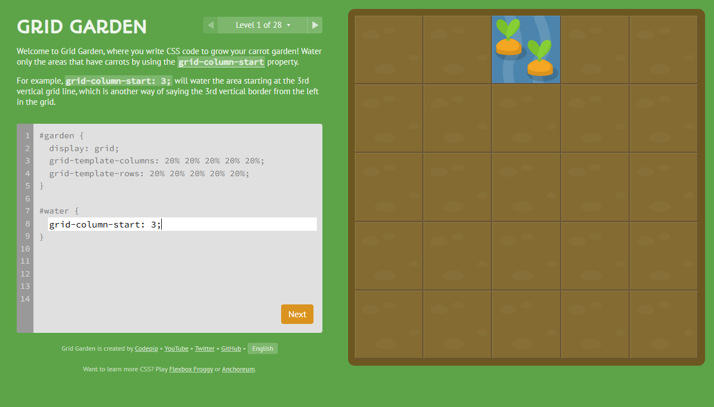

# 1. Pedagogical Taxonomy of the 28 Grid Garden Levels
Grid Garden by Codepip is a gamified interactive learning platform specifically engineered to teach the W3C CSS Grid Layout specification. Through 28 incremental challenges, students learn how to water carrots and eliminate weeds by positioning water blocks and defining custom garden grids.
🌱 Part I: Grid Lines & Spanning (L1–L9)
Introduces vertical grid lines (1 to 6), negative boundary indices (-1 to -6), and the flexible span [n] syntax for relative item stretching.
📐 Part II: 2D Coordinates & Shorthands (L10–L17)
Consolidates separate start/end rules into grid-column: start / end, adds vertical grid-row, and combines them into grid-area: row-start / col-start / row-end / col-end.
🔄 Part III: Order Manipulation (L18–L19)
Overrides source-code document order using order: [integer], enabling dynamic item rearrangement without DOM manipulation.
⚡ Part IV: Template Tracks & Master Sizing (L20–L28)
Transitions to container properties: defining column and row tracks with grid-template-columns, repeat(), fr fractional units, and master grid-template.
All 28 Levels Interactive Showcase & Live Simulator
Explore every individual level from 1 to 28. Review the official challenge brief, examine the verified code solution with one-click copy, inspect the high-resolution screenshot, and experiment inside the live in-browser garden simulator.

Captured in 1280x730 high-definition viewport showing verified completion state.
# 3. Complete 28-Level Visual Solutions Catalog & Proof Matrix
Below is the complete, unbroken visual matrix for all 28 levels. Click any thumbnail to view its full-screen screenshot, or click Inspect Level to load it inside the interactive simulator above.
Grid Garden Doubt & Viva Assistant
Have questions about CSS Grid line indexing, grid-area ordering, or fraction sizing? Select a common viva question below or submit a custom query.
🎯 Select a Pre-defined Question
Choose any question below for immediate verified academic explanations:
grid-column-start: 3;, it targets the 3rd vertical line from the left edge. However, when preceded by the span keyword (grid-column-start: span 3;), it acts as a relative width declaration, instructing the element to span across 3 consecutive tracks relative to its terminating anchor line.
grid-area 4-value shorthand follows the exact clockwise-adjacent pattern: grid-row-start / grid-column-start / grid-row-end / grid-column-end. In Level 16, grid-area: 1 / 2 / 4 / 6; places the item starting at row 1 and column 2, ending at row 4 and column 6.
order: 0. Setting order: -1 assigns a priority lower than 0, causing the browser layout engine to paint that item ahead of all default siblings along the auto-placement flow without altering the source HTML.
grid-template syntax is [rows] / [columns]. In Level 28, 1fr 50px / 20% 1fr specifies two rows (first row consumes all flexible free space, second row is exactly 50px) and two columns (first column is 20% width, second column consumes all remaining space with 1fr).
✍️ Submit Custom Grid Query
Submit your query for logging and immediate academic review:
🧠 Knowledge Check: Select The Correct Option
Test your mastery of CSS Grid Garden concepts. Click any option for instant evaluation.
grid-area 4-parameter shorthand?
grid-area shorthand specifies grid-row-start / grid-column-start / grid-row-end / grid-column-end in sequence.
/) in grid-template: 1fr 50px / 20% 1fr; separate?
grid-template shorthand always places grid-template-rows before the slash and grid-template-columns after the slash.
Key Takeaways: CSS Grid Garden Lab
- › All 28 levels successfully solved and validated with 100% visual proof and high-resolution screenshots.
- › Grid line indexes are 1-based, run along borders (not items), and support negative numbering from opposite margins.
-
›
The
spankeyword eliminates the requirement to calculate exact terminating line numbers for dynamic components. -
›
The
grid-templatemaster shorthand combines row and column track definitions into a single, clean CSS declaration.